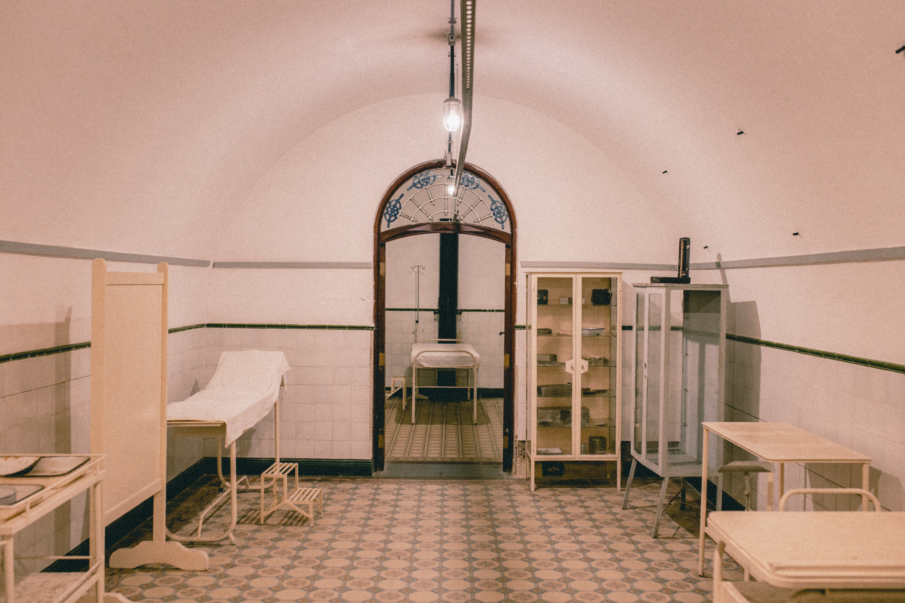

Nossa clínica nasceu em 1964, na cidade de Ilhéus. Inicialmente com intuito de realizar procedimentos laboratoriais que ainda não haviam na região. Contando apenas com um funcionário no atendimento e uma biomédica, foram realizadas diversas análises durante o ano cumprindo o objetivo de sanar a demanda que havia.
Parceirias foram feitas e no ano seguinte, contávamos com mais 5 profissionais que com o excelente trabalho proporcionaram o crescimento da clínica para nível regional, abarcando o sul da Bahia.
Hoje temos uma equipe completa para te atender, além da melhor estrutura do estado. Oferecemos os melhores serviços e focamos em promover a saúde e o bem-estar dos nossos pacientes.